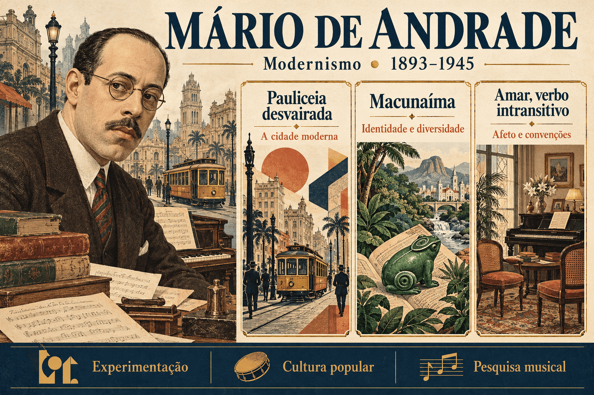

Mário de Andrade: biografia, obras, Macunaíma e características modernistas
Mário de Andrade foi poeta, ficcionista, crítico, professor de música e pesquisador da cultura brasileira. Sua atuação na Semana de Arte Moderna de 1922, sua experimentação literária e seus estudos sobre manifestações populares fizeram dele um dos nomes centrais do Modernismo.
Autor de Pauliceia desvairada, Amar, verbo intransitivo e Macunaíma, procurou renovar a linguagem e pensar o Brasil em sua diversidade. A cidade moderna, as relações sociais, a música, as narrativas de tradição oral e os diferentes usos do português participam desse projeto.
Estudar Mário exige ir além da imagem de um escritor que simplesmente valorizou o nacional. Suas obras interrogam como a identidade brasileira é construída, quais contradições a atravessam e como diferentes repertórios podem ser transformados pela criação artística.

Mário de Andrade em resumo
- Nome completo: Mário Raul de Morais Andrade.
- Nascimento: 9 de outubro de 1893, em São Paulo.
- Falecimento: 25 de fevereiro de 1945, em São Paulo.
- Atuação: escritor, crítico, professor, musicólogo, pesquisador e gestor cultural.
- Movimento literário: Modernismo, com papel decisivo na primeira fase.
- Obras centrais: Pauliceia desvairada (1922), Amar, verbo intransitivo (1927) e Macunaíma (1928).
- Características: experimentação, oralidade, humor, fragmentação e investigação da identidade nacional.
- Pesquisa cultural: viagens, registros de manifestações populares e idealização da Missão de Pesquisas Folclóricas de 1938.
Quem foi Mário de Andrade?
Nascido em São Paulo, Mário desenvolveu uma formação musical que marcou sua trajetória intelectual. Estudou no Conservatório Dramático e Musical de São Paulo, onde também lecionou. A atenção ao ritmo, às vozes e às relações entre linguagens artísticas atravessa sua produção literária.
Além de poesia e ficção, escreveu críticas, ensaios, crônicas e uma extensa correspondência. O diálogo com outros artistas participou da construção e da revisão de suas ideias. Seu interesse pela cultura não se limitou aos livros: envolveu música, festas, danças, objetos, fotografias e práticas cotidianas.
Entre 1935 e 1938, dirigiu o Departamento de Cultura do município de São Paulo. Nesse trabalho, articulou pesquisa, documentação e iniciativas de acesso à cultura. Sua atuação também contribuiu para os debates sobre preservação do patrimônio brasileiro.
Mário morreu em 1945. Embora seja associado à geração de 1922, continuou produzindo e revendo suas posições depois da fase heroica. Sua trajetória não cabe inteiramente no recorte didático de 1922 a 1930.
Mário de Andrade e a primeira fase modernista
Mário participou da Semana de Arte Moderna e da contestação dos padrões acadêmicos. Sua proposta combinava liberdade de criação e pesquisa: renovar a arte não significava apenas romper regras, mas encontrar outras maneiras de perceber e representar a experiência brasileira.
A primeira geração modernista valorizou recursos como verso livre, linguagem cotidiana, síntese, humor e paródia. Entretanto, os autores não compartilhavam um programa único. Mário e Oswald de Andrade foram interlocutores importantes, mas tiveram diferenças estéticas e intelectuais.
Não confunda: Mário de Andrade é o autor de Macunaíma. Oswald de Andrade escreveu os manifestos Pau-Brasil e Antropófago. A proximidade histórica não torna seus projetos idênticos.
Características literárias de Mário de Andrade
- Experimentação: revisão de formas poéticas e narrativas, com fragmentação e combinações inesperadas.
- Linguagem brasileira: incorporação e reelaboração de usos cotidianos, expressões regionais e diferentes registros do português.
- Relação com a música: trabalho com ritmo, repetições, contrastes e aproximação entre vozes.
- Humor e ironia: questionamento de convenções e exposição de contradições sociais.
- Diversidade cultural: diálogo com narrativas, cantos e práticas populares de diferentes regiões.
- Crítica social: observação da burguesia, da modernização urbana e das desigualdades.
- Pesquisa e criação: transformação do material estudado em construção literária própria.
Principais obras de Mário de Andrade
| Obra | Publicação | Importância |
|---|---|---|
| Há uma gota de sangue em cada poema | 1917 | Livro de estreia; permite acompanhar a trajetória anterior à consolidação modernista. |
| Pauliceia desvairada | 1922 | Experimentação poética, experiência urbana e reflexão sobre a criação no “Prefácio interessantíssimo”. |
| Amar, verbo intransitivo: idílio | 1927 | Ficção que articula relações afetivas, convenções burguesas e experimentação narrativa. |
| Macunaíma: o herói sem nenhum caráter | 1928 | Rapsódia que combina repertórios culturais e problematiza a identidade nacional. |
| Ensaio sobre a música brasileira | 1928 | Reflexão sobre música e formação cultural brasileira. |
| Contos novos | 1947, publicação póstuma | Narrativas que ampliam o contato com a complexidade social e psicológica de sua ficção. |
Pauliceia desvairada (1922): a cidade em transformação
Publicado no ano da Semana de Arte Moderna, Pauliceia desvairada é um marco da poesia modernista. A cidade de São Paulo aparece como experiência de contrastes, deslocamentos, ritmos e percepções fragmentadas.
A paisagem urbana não funciona apenas como cenário. Sua diversidade interfere na organização do poema: imagens se aproximam rapidamente, vozes se cruzam e o ritmo acompanha tensões da vida moderna. A experiência da cidade envolve fascínio, desconforto e crítica.
O verso livre, as exclamações, as enumerações e as mudanças de registro ajudam a construir essa percepção. A liberdade formal não equivale a ausência de composição: cada aproximação entre palavras e imagens participa dos efeitos do texto.
Poemas e questões de leitura
- “Inspiração”: a relação intensa com São Paulo combina envolvimento afetivo e percepção de contrastes.
- “Ode ao burguês”: o tom provocador questiona valores e comportamentos associados à acomodação burguesa.
- “Os cortejos”: a observação da multidão permite discutir a vida urbana e as tensões entre indivíduos e coletividade.
O “Prefácio interessantíssimo”
O prefácio de Pauliceia desvairada apresenta reflexões sobre a criação poética em uma linguagem que mistura explicação, provocação e humor. É um texto importante para compreender a consciência estética do autor.
Impulso lírico e elaboração
Mário distingue o momento do impulso criador do trabalho posterior de reflexão e revisão. A valorização da experiência imediata não elimina a intervenção consciente sobre o texto. Por isso, é impreciso afirmar que sua poesia defende apenas escrever sem pensar.
Vozes, associações e música
O autor mobiliza analogias musicais para pensar a aproximação de palavras, imagens e vozes. Em vez de uma sequência discursiva sempre explicativa, a composição pode produzir relações por contraste, justaposição e associação.
A ideia de polifonia ajuda a perceber a convivência de elementos diferentes na construção poética. A aproximação com a música é uma proposta de organização da linguagem, não a afirmação de que um poema reproduz literalmente uma execução musical.
Para interpretar: o prefácio não apenas anuncia liberdade. Ele discute como a criação pode ser organizada e como o leitor precisa participar da construção das relações de sentido.
Macunaíma (1928): resumo e personagens
Publicado em 1928, Macunaíma: o herói sem nenhum caráter acompanha um protagonista que atravessa espaços, situações e transformações fora dos limites de uma narrativa realista convencional.
Macunaíma parte de um universo ligado à floresta e chega à cidade de São Paulo com seus irmãos, Maanape e Jiguê. Um dos eixos do enredo é a busca da muiraquitã, amuleto recebido de Ci, a Mãe do Mato, que acaba em poder de Venceslau Pietro Pietra, também identificado como o gigante Piaimã.
A procura do objeto reúne aventuras, conflitos, humor e episódios maravilhosos. A cidade industrial e os repertórios míticos não ocupam mundos isolados: eles se cruzam em uma narrativa que desafia fronteiras espaciais e culturais.
| Personagem ou elemento | Papel na narrativa |
|---|---|
| Macunaíma | Protagonista contraditório, sujeito a mudanças, astúcias, fracassos e transformações. |
| Maanape e Jiguê | Irmãos do herói, participam de suas aventuras. |
| Ci | Figura ligada ao vínculo amoroso e à memória associada à muiraquitã. |
| Piaimã / Venceslau Pietro Pietra | Antagonista que combina a figura do gigante com a posição de homem rico na cidade. |
| Muiraquitã | Objeto cuja perda e busca organizam parte importante do percurso do protagonista. |
O que significa “o herói sem nenhum caráter”?
O subtítulo possui uma ambiguidade central. Pode remeter às condutas moralmente contraditórias do protagonista, mas também à ausência de uma configuração estável: Macunaíma muda, combina traços diferentes e resiste ao modelo de herói exemplar.
Na reflexão sobre o Brasil, essa instabilidade permite problematizar a tentativa de definir uma identidade nacional única. O personagem não deve ser convertido em retrato literal de todos os brasileiros nem em prova de uma suposta inferioridade natural do país.
O conhecido refrão “Ai! que preguiça!” participa da caracterização e do humor, mas não explica sozinho a obra. Reduzir Macunaíma à preguiça apaga sua inventividade, seus conflitos e as tensões que a narrativa constrói.
Chave de leitura: o livro não oferece uma essência nacional simples e definitiva. A composição do herói e de suas aventuras coloca em questão a própria possibilidade de fixá-la.
Por que Macunaíma é uma rapsódia?
O termo rapsódia destaca a composição por reunião e transformação de materiais diversos. Mitos, contos, provérbios, cantos e modos de dizer entram em uma construção literária articulada pelo escritor.
Entre suas fontes estão narrativas indígenas registradas pelo pesquisador Theodor Koch-Grünberg. A obra, porém, não se limita a transcrever esses registros: aproxima repertórios de diferentes origens e os reorganiza segundo seu projeto artístico.
A aparente espontaneidade resulta de pesquisa e elaboração. Também é necessário distinguir a criação de Mário das tradições que ela mobiliza: Macunaíma não é um documento neutro de todas as culturas indígenas nem substitui as narrativas e vozes de seus povos.
A linguagem e a “Carta pras Icamiabas”
A narrativa combina expressões populares, regionalismos, registros eruditos e invenção verbal. Na “Carta pras Icamiabas”, o contraste com a linguagem de outros episódios produz efeitos satíricos e evidencia o prestígio atribuído à expressão rebuscada.
As diferenças de registro não são detalhes decorativos. Elas permitem questionar relações entre língua, autoridade e identidade, além de ampliar as possibilidades expressivas da prosa brasileira.
Amar, verbo intransitivo (1927): afeto e convenção social
O romance apresenta Elza, chamada de Fräulein, uma mulher alemã contratada por Sousa Costa para orientar a iniciação afetiva e sexual de seu filho Carlos, sob a aparência de uma função educativa no ambiente doméstico.
A situação permite examinar a distância entre a respeitabilidade pública da família burguesa e os acordos que ela estabelece em particular. Afeto, dinheiro, formação e controle social se cruzam em uma relação atravessada por expectativas diferentes.
O título e o subtítulo “idílio”
Na gramática, amar costuma ser apresentado como verbo transitivo. O título provoca essa expectativa ao aproximar o amor de uma experiência que se pretende autônoma. O enredo, entretanto, mostra o quanto os sentimentos são atravessados por objetos, contratos e convenções.
O subtítulo “idílio” também produz tensão: a expectativa de uma relação harmoniosa encontra interesses e desigualdades. Não é adequado tratar a classificação como garantia de um romance amoroso idealizado.
Experimentação narrativa
O narrador intervém, comenta e interfere na leitura das personagens. A montagem de cenas e as aproximações com procedimentos de outras artes participam da renovação da prosa. Assim, o livro articula crítica social e reflexão sobre os modos de narrar.
Pesquisa folclórica, viagens e políticas culturais
Mário investigou manifestações musicais, danças, festas e narrativas populares. Suas viagens e registros contribuíram para compreender práticas culturais que frequentemente recebiam pouco reconhecimento das instituições.
No Departamento de Cultura de São Paulo, essa preocupação ganhou dimensão pública. A Missão de Pesquisas Folclóricas de 1938, idealizada por ele e realizada por uma equipe de pesquisadores, percorreu regiões do Norte e do Nordeste e produziu registros sonoros, fotográficos e outros documentos.
Mário não acompanhou a equipe em campo nessa missão. Sua idealização deve ser distinguida das viagens de pesquisa que realizou pessoalmente em outros momentos.
O interesse pelo popular não deve transformar essas culturas em peças de um passado imóvel. Os registros resultam de encontros, escolhas e condições históricas, enquanto as práticas documentadas pertencem a comunidades com vida e transformações próprias.
Comparação entre as três obras centrais
| Obra | Questão central | Experimentação |
|---|---|---|
| Pauliceia desvairada | Experiência urbana, contrastes e percepção da cidade moderna. | Verso livre, fragmentação e aproximação de vozes e imagens. |
| Amar, verbo intransitivo | Afeto, contratos e convenções da família burguesa. | Intervenção do narrador e montagem de cenas. |
| Macunaíma | Contradições do herói e problematização da identidade nacional. | Rapsódia, maravilhoso e mistura de repertórios e registros. |
Mário de Andrade no ENEM, no PAES UEMA e nos vestibulares
Na preparação para avaliações, relacione as escolhas de linguagem aos problemas representados. Os tópicos seguintes são orientações de estudo, não previsão de questões ou indicação de obras obrigatórias.
- A experiência da cidade e os recursos do verso livre em Pauliceia desvairada.
- A relação entre impulso criador e elaboração no “Prefácio interessantíssimo”.
- A rapsódia e a ambiguidade de “sem nenhum caráter” em Macunaíma.
- A mistura de registros linguísticos como recurso crítico.
- As convenções burguesas e o narrador de Amar, verbo intransitivo.
- As relações entre pesquisa cultural, autoria e representação da diversidade.
Erros comuns ao estudar Mário de Andrade
- Confundi-lo com Oswald de Andrade: são autores diferentes, com projetos próprios.
- Tratar verso livre como ausência de técnica: a liberdade também exige composição.
- Reduzir Macunaíma a um exemplo de desonestidade: o subtítulo também envolve instabilidade e identidade.
- Considerar a rapsódia simples reprodução de folclore: há seleção e transformação literária.
- Ler Amar, verbo intransitivo como romance idealizado: o título e o subtítulo entram em tensão com os interesses sociais do enredo.
- Afirmar que Mário viajou com a Missão de 1938: ele a idealizou, mas não integrou sua equipe de campo.
- Encerrar sua produção em 1930: a trajetória do autor ultrapassa a fase heroica.
Quiz sobre Mário de Andrade
Questões de interpretação — nível avançado
Questão 1 — Em Pauliceia desvairada, a fragmentação e a aproximação de imagens urbanas contribuem para:
Questão 2 — A reflexão do “Prefácio interessantíssimo” sobre o impulso lírico permite concluir que:
Questão 3 — Interpretar “sem nenhum caráter” apenas como falta de honestidade é insuficiente porque:
Questão 4 — A classificação de Macunaíma como rapsódia destaca:
Questão 5 — Em Amar, verbo intransitivo, o contrato estabelecido pela família e o subtítulo “idílio” produzem uma tensão que:
Questão 6 — A relação entre pesquisa cultural e criação em Mário de Andrade exige reconhecer que:
Resumo final sobre Mário de Andrade
- Mário de Andrade viveu entre 1893 e 1945 e participou da Semana de 1922.
- Em Pauliceia desvairada, a experiência urbana se relaciona à experimentação poética.
- O “Prefácio interessantíssimo” articula liberdade criadora e elaboração.
- Macunaíma transforma repertórios culturais em uma rapsódia sobre um herói contraditório.
- Amar, verbo intransitivo examina afetos e convenções burguesas com uma narrativa experimental.
- Sua pesquisa e sua atuação pública ampliaram o debate sobre diversidade e patrimônio cultural.
Perguntas frequentes sobre Mário de Andrade
Quem foi Mário de Andrade?
Foi um escritor, professor de música, crítico e pesquisador brasileiro, nascido em São Paulo em 1893 e falecido em 1945, com atuação central no Modernismo.
Quais são suas principais obras?
Pauliceia desvairada, de 1922, Amar, verbo intransitivo, de 1927, e Macunaíma, de 1928, estão entre suas obras centrais.
Qual é a importância de Pauliceia desvairada?
O livro articula a experiência da cidade moderna à experimentação poética e inclui o Prefácio interessantíssimo, importante reflexão sobre a criação.
O que significa o herói sem nenhum caráter?
A expressão envolve tanto as contradições morais de Macunaíma quanto a instabilidade de sua configuração, permitindo questionar uma identidade nacional fixa.
Por que Macunaíma é uma rapsódia?
Porque sua composição reúne e transforma materiais culturais diversos, como narrativas, cantos, provérbios e modos de dizer.
Qual é o tema de Amar, verbo intransitivo?
O romance examina relações afetivas e convenções burguesas a partir de um acordo familiar envolvendo a formação de Carlos e a atuação de Fräulein Elza.
Mário participou da Missão de Pesquisas Folclóricas de 1938?
Ele idealizou a iniciativa, mas não acompanhou a equipe em campo. Essa missão deve ser distinguida das viagens que realizou pessoalmente em outros momentos.
Mário e Oswald de Andrade são o mesmo autor?
Não. Foram escritores diferentes. Mário escreveu Macunaíma; Oswald é o autor dos manifestos Pau-Brasil e Antropófago.
Conteúdos relacionados
- Macunaíma: resumo, personagens e análise da obra
- Primeira geração do Modernismo: autores e obras
- Semana de Arte Moderna de 1922: contexto e importância
- Modernismo no Brasil: fases, características e autores
- Vanguardas europeias: resumo e características
- Lima Barreto: biografia, obras e crítica social
Conclusão
A contribuição de Mário de Andrade está na articulação entre invenção, estudo e responsabilidade cultural. A cidade, a família burguesa e os repertórios populares não aparecem apenas como assuntos: transformam a própria maneira de construir poemas e narrativas.
Ler suas obras permite compreender o Modernismo como investigação permanente, e não como um conjunto de fórmulas. A busca pelo Brasil se realiza em tensões, escolhas e revisões que continuam a provocar perguntas sobre linguagem, identidade e participação cultural.
Referências
- UNIVERSIDADE DE SÃO PAULO. Instituto de Estudos Brasileiros. Mário de Andrade. Consultar biografia e acervo.
- ANDRADE, Mário de. Paulicea desvairada. São Paulo: Casa Mayença, 1922. Consultar edição na Biblioteca Brasiliana Guita e José Mindlin — USP.
- ANDRADE, Mário de. Amar, verbo intransitivo: idílio. São Paulo: Casa Editora Antônio Tisi, 1927. Consultar registro e texto na UFSC.
- ANDRADE, Mário de. Macunaíma: o herói sem nenhum caráter. 1928. Consultar registro na UFSC.
- UNIVERSIDADE DE SÃO PAULO. Faculdade de Filosofia, Letras e Ciências Humanas. Nascimento de Mário de Andrade. Consultar material sobre o autor.
- MINISTÉRIO DA EDUCAÇÃO. Mestres da Literatura: Mário de Andrade. Consultar roteiro educativo.
- PREFEITURA DE SÃO PAULO. Últimos dias para aproveitar a programação gratuita de folclore na cidade de São Paulo. Material sobre a Missão de Pesquisas Folclóricas e seu acervo. Consultar informações sobre a equipe e os registros.
Explore Outros Conteúdos
Continue seus estudos acessando outras seções do site Mestre Kira: